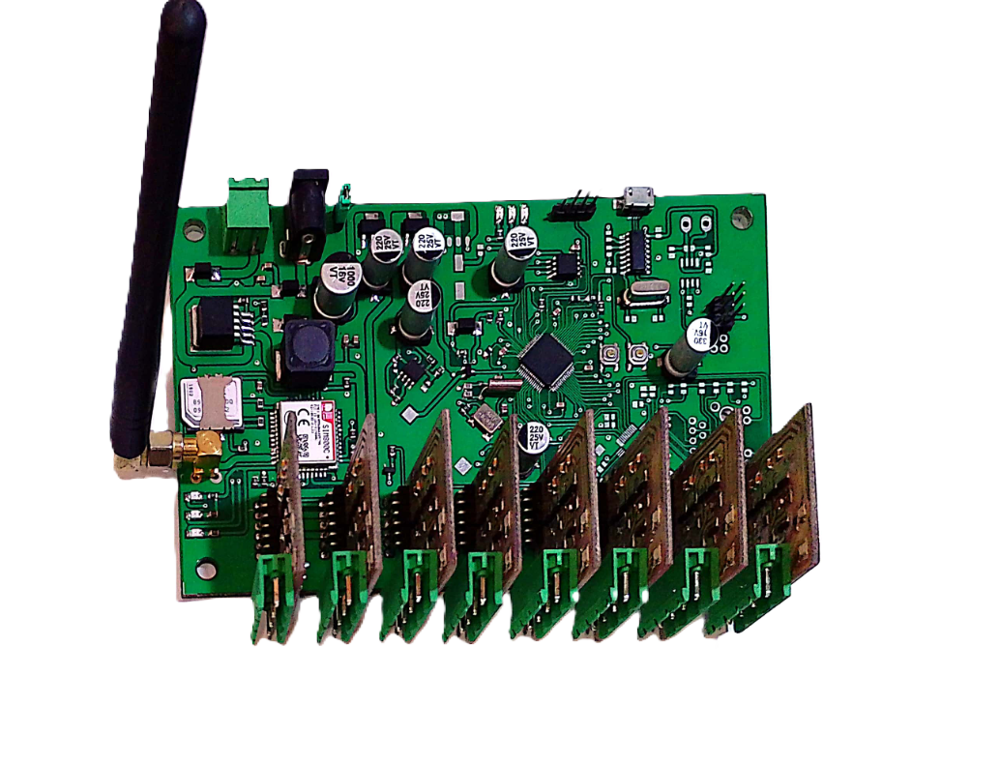

مشخصات فنی برد:
- تعداد خطوط عبوری 8 لاین به صورت رفت و برگشت با کد محور مجزا
- حافظه 64 مگابیت برای ذخیره داده رکورد شده
- ارتباط و رابط دستگاه شامل:
- Gsm/gprs برای ارسال دیتا به صورت آنلاین به سرور مرکزی از طریق مودم
- ارسال و دریافت دیتا از طریق رابط USB و سریال برای ورودی کانفیگ
- رابط USB برای دیباگ دستگاه
- رابط RS485 برای ارتباط با دیگر دستگاهها
- رابط اترنت برای ارتباط با مودم و تجهیزات تحت شبکه
- دقت شمارش تا 97 درصد
- کلاس بندی شامل پنج کلاس و قابل ارتقاء تا هشت کلاس
- سرعت اندازه گیری تا 250 کیلومتر بر ساعت
- تخلفات شامل سرعت، حرکت معکوس و فاصله غیر مجاز
- بازه زمانی ارسال دیتا هر پنج دقیقه
- نوع لوپ و سنسور 150*200 سانتیمتر با ظرفیت 100 میکرو هانری
- ولتاژ تغذیه ورودی 12 تا 32 ولت
- توان مصرفی 1.2 الی 1.5 وات
- نوع تغذیه ورودی برق شهر، سیستم سولار و باطری
- دمای کارکرد قطعات 40- تا 85+ درجه سانتیگراد
- ابعاد (طول، عرض، ارتفاع): 15*10*3.5 سانتیمتر
- وزن 650 گرم
ویژگیهای بردهای تردد شماری ماژولار:
- قابلیت توسعهپذیری و افزودن ماژولهای جدید
- انعطافپذیری و تنظیم بر اساس نیازهای خاص
- سهولت در تعمیر و نگهداری
- کاهش هزینهها با قابلیت تعویض ماژولها
- کارایی بالا و پردازندههای قدرتمند
- دقت بالا در شمارش تردد
- قابلیت اتصال به شبکه و پورتهای مختلف
- مصرف انرژی بهینه
- اندازه کوچک برای نصب آسان
- پشتیبانی از پروتکلهای ارتباطی متنوع
- امکان یکپارچهسازی با سیستمهای دیگر
- پایداری و اطمینانپذیری بالا
- قابلیت گزارشدهی و ارسال هشدار
- پشتیبانی از هوش مصنوعی برای تحلیل دادهها